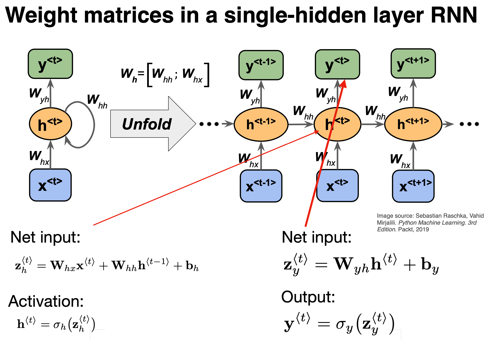

Week 47: Recurrent neural networks and Autoencoders#
Morten Hjorth-Jensen, Department of Physics, University of Oslo, Norway
Date: November 17-21, 2025
Plan for week 47#
Plans for the lecture Monday 17 November, with video suggestions etc.
Recurrent neural networks, code examples and long-short-term memory
Autoencoders (last topic this semester)
Last lecture: November 24, note error in time planner.
Video of lecture at https://youtu.be/cuuU-FTFaKQ
Whiteboard notes at CompPhysics/MachineLearning
Lab sessions on Tuesday and Wednesday.
Work and Discussion of project 3
Last weekly exercise with deadline November 28, available from (early morning) Tuesday November 18.
Last lab sessions: November 25 and 26
Reading recommendations RNNs#
These lecture notes at CompPhysics/MachineLearning
See also lecture notes from week 46 at CompPhysics/MachineLearning. The lecture on Monday starts with a repetition on recurrent neural networks. The second lecture starts with basics of autoenconders.
For RNNs, see Goodfellow et al chapter 10, see https://www.deeplearningbook.org/contents/rnn.html.
Reading suggestions for implementation of RNNs in PyTorch: see Rashcka et al.’s chapter 15 and GitHub site at rasbt/machine-learning-book.
RNN video at https://youtu.be/PCgrgHgy26c?feature=shared
New xLSTM, see Beck et al https://arxiv.org/abs/2405.04517. Exponential gating and modified memory structures boost xLSTM capabilities to perform favorably when compared to state-of-the-art Transformers and State Space Models, both in performance and scaling.
TensorFlow examples#
For TensorFlow (using Keras) implementations, we recommend
David Foster, Generative Deep Learning with TensorFlow, see chapter 5 at https://www.oreilly.com/library/view/generative-deep-learning/9781098134174/ch05.html
Joseph Babcock and Raghav Bali Generative AI with Python and their GitHub link, chapters 2 and 3 at PacktPublishing/Hands-On-Generative-AI-with-Python-and-TensorFlow-2
Reading recommendations: Autoencoders (AE)#
Goodfellow et al chapter 14, see https://www.deeplearningbook.org/contents/autoencoders.html
Rashcka et al. Their chapter 17 contains a brief introduction only.
Building AEs in Keras at https://blog.keras.io/building-autoencoders-in-keras.html
Introduction to AEs in TensorFlow at https://www.tensorflow.org/tutorials/generative/autoencoder
What is a recurrent NN?#
A recurrent neural network (RNN), as opposed to a regular fully connected neural network (FCNN) or just neural network (NN), has layers that are connected to themselves.
In an FCNN there are no connections between nodes in a single layer. For instance, \((h_1^1\) is not connected to \((h_2^1\). In addition, the input and output are always of a fixed length.
In an RNN, however, this is no longer the case. Nodes in the hidden layers are connected to themselves.
Why RNNs?#
Recurrent neural networks work very well when working with sequential data, that is data where the order matters. In a regular fully connected network, the order of input doesn’t really matter.
Another property of RNNs is that they can handle variable input and output. Consider again the simplified breast cancer dataset. If you have trained a regular FCNN on the dataset with the two features, it makes no sense to suddenly add a third feature. The network would not know what to do with it, and would reject such inputs with three features (or any other number of features that isn’t two, for that matter).
More whys#
Traditional feedforward networks process fixed-size inputs and ignore temporal order. RNNs incorporate recurrence to handle sequential data like time series or language .
At each time step, an RNN cell processes input x_t and a hidden state h_{t-1} from the previous step, producing a new hidden state h_t and (optionally) an output y_t.
This hidden state acts as a “memory” carrying information forward. For example, predicting stock prices or words in a sentence relies on past inputs  .
RNNs share parameters across time steps, so they can generalize patterns regardless of sequence length .
RNNs in more detail#

Figure 1:
RNNs in more detail, part 2#

Figure 1:
RNNs in more detail, part 3#

Figure 1:
RNNs in more detail, part 4#

Figure 1:
RNNs in more detail, part 5#

Figure 1:
RNNs in more detail, part 6#

Figure 1:
RNNs in more detail, part 7#

Figure 1:
RNN Forward Pass Equations#
For a simple (vanilla) RNN with one hidden layer and no bias, the state update and output are:
where \(\sigma\) is an activation (e.g. tanh or ReLU) .
In matrix form,
for input dimension \(d\), hidden dimension \(h\), output dimension \(q\).
Because the same \(\mathbf{W}\) are used each step, gradients during training will propagate through time.
Unrolled RNN in Time#
Input \(x_1,x_2,x_3,\dots\) feed sequentially; the hidden state flows from one step to the next, capturing past context.
After processing the final input \(x_T\), the network can make a prediction (many-to-one) or outputs can be produced at each step (many-to-many).
Unrolling clarifies that training an RNN is like training a deep feedforward network of depth T, with recurrent connections tying layers together.
Example Task: Character-level RNN Classification#
A classic example: feed a name (sequence of characters) one char at a time, and classify its language of origin.
At each step, the RNN outputs a hidden state; we use the final hidden state to predict the class of the entire sequence.
A character-level RNN reads words as a series of characters—outputting a prediction and ‘hidden state’ at each step, feeding the previous hidden state into the next step. We take the final prediction to be the output” .
This illustrates sequence-to-one modeling: every output depends on all previous inputs.
PyTorch: Defining a Simple RNN, using Tensorflow#
import tensorflow as tf
import numpy as np
# -----------------------
# 1. Hyperparameters
# -----------------------
input_size = 10 # Dimensionality of each time step
hidden_size = 20 # Number of recurrent units
num_classes = 2 # Binary classification
sequence_length = 5 # Sequence length
batch_size = 16
# -----------------------
# 2. Dummy dataset
# X: [batch, seq, features]
# y: [batch]
# -----------------------
X = np.random.randn(batch_size, sequence_length, input_size).astype(np.float32)
y = np.random.randint(0, num_classes, size=(batch_size,))
# -----------------------
# 3. Build simple RNN model
# -----------------------
model = tf.keras.Sequential([
tf.keras.layers.SimpleRNN(
units=hidden_size,
activation="tanh",
return_sequences=False, # Only final hidden state
input_shape=(sequence_length, input_size)
),
tf.keras.layers.Dense(num_classes)
])
model.compile(
optimizer=tf.keras.optimizers.Adam(1e-3),
loss=tf.keras.losses.SparseCategoricalCrossentropy(from_logits=True),
metrics=["accuracy"]
)
# -----------------------
# 4. Train the model
# -----------------------
history = model.fit(
X, y,
epochs=5,
batch_size=batch_size,
verbose=1
)
# -----------------------
# 5. Evaluate
# -----------------------
logits = model.predict(X)
print("Logits from model:\n", logits)
This recurrent neural network uses the TensorFlow/Keras SimpleRNN, which is the counterpart to PyTorch’s nn.RNN. In this code we have used
sequence\(\_\)length is the number of time steps in each input sequence fed into a recurrent neural network. It represents how many time points we provide at once. It is the number of ordered observations in each sample of our dataset.
return_sequences=False makes it output only the last hidden state, which is fed to the classifier. Also, we have
from_logits=True matches the PyTorch CrossEntropyLoss.
Similar example using PyTorch#
import torch
import torch.nn as nn
import torch.optim as optim
# -----------------------
# 1. Hyperparameters
# -----------------------
input_size = 10
hidden_size = 20
num_layers = 1
num_classes = 2
sequence_length = 5
batch_size = 16
lr = 1e-3
# -----------------------
# 2. Dummy dataset
# -----------------------
X = torch.randn(batch_size, sequence_length, input_size)
y = torch.randint(0, num_classes, (batch_size,))
# -----------------------
# 3. Simple RNN model
# -----------------------
class SimpleRNN(nn.Module):
def __init__(self, input_size, hidden_size, num_layers, num_classes):
super(SimpleRNN, self).__init__()
self.rnn = nn.RNN(
input_size=input_size,
hidden_size=hidden_size,
num_layers=num_layers,
batch_first=True,
nonlinearity="tanh"
)
self.fc = nn.Linear(hidden_size, num_classes)
def forward(self, x):
out, h_n = self.rnn(x) # out: [batch, seq, hidden]
# ---- FIX: take only the last time-step tensor ----
last_hidden = out[:, -1, :] # [batch, hidden]
logits = self.fc(last_hidden)
return logits
model = SimpleRNN(input_size, hidden_size, num_layers, num_classes)
criterion = nn.CrossEntropyLoss()
optimizer = optim.Adam(model.parameters(), lr=lr)
# -----------------------
# 4. Training step
# -----------------------
model.train()
optimizer.zero_grad()
logits = model(X)
loss = criterion(logits, y)
loss.backward()
optimizer.step()
print(f"Loss: {loss.item():.4f}")
Backpropagation Through Time (BPTT) and Gradients#
Backpropagation Through Time (BPTT).
Training an RNN involves computing gradients through time by unfolding the network: treat the unrolled RNN as a very deep feedforward net.
We compute the loss \(L = \frac{1}{T}\sum_{t=1}^T \ell(y_t,\hat y_t)\) and backpropagate from \(t=T\) down to \(t=1.\)
The computational graphs in the figures below shows how each hidden state depends on inputs and parameters across time .
BPTT applies the chain rule along this graph, accumulating gradients from each time step into the shared parameters.
Truncated BPTT and Gradient Clipping#
Truncated BPTT: Instead of backpropagating through all T steps, we may backpropagate through a fixed window of length \(\tau\). This approximates the full gradient and reduces computation.
Concretely, one computes gradients up to \(\tau\) steps and treats gradients beyond as zero. This still allows learning short-term patterns efficiently.
Gradient Clipping: Cap the gradient norm to a maximum value to prevent explosion. For example in PyTorch: torch.nn.utils.clip_grad_norm_(model.parameters(), max_norm=1.0) ensures \(\|\nabla\|\le 1\).
These techniques help stabilize training, but the fundamental vanishing problem motivates using alternative RNN cells (LSTM/GRU) in practice (see below).
Limitations and Considerations#
Vanishing Gradients: Simple RNNs have fundamental difficulty learning long-term dependencies due to gradient decay .
Capacity: Without gates, RNNs may struggle with tasks requiring remembering far-back inputs. Training can be slow as it’s inherently sequential.
Alternatives: In practice, gated RNNs (LSTM/GRU) or Transformers are often used for long-range dependencies. However, simple RNNs are still instructive and sometimes sufficient for short sequences  .
Regularization: Weight decay or dropout (on inputs/states) can help generalization but must be applied carefully due to temporal correlations.
Statefulness: For very long sequences, one can preserve hidden state across batches (stateful RNN) to avoid resetting memory.
PyTorch RNN Time Series Example#
We first implement a simple RNN in PyTorch to forecast a univariate time series (a sine wave). The steps are: (1) generate synthetic data and form input/output sequences; (2) define an nn.RNN model; (3) train the model with MSE loss and an optimizer; (4) evaluate on a held-out test set. For example, using a sine wave as in prior tutorials , we create sliding windows of length seq_length. The code below shows each step. We use nn.RNN (the basic recurrent layer) followed by a linear output. The training loop (with MSELoss and Adam) updates the model to minimize prediction error .
import numpy as np
import torch
from torch import nn, optim
# 1. Data preparation: generate a sine wave and create input-output sequences
time_steps = np.linspace(0, 100, 500)
data = np.sin(time_steps) # shape (500,)
seq_length = 20
X, y = [], []
for i in range(len(data) - seq_length):
X.append(data[i:i+seq_length]) # sequence of length seq_length
y.append(data[i+seq_length]) # next value to predict
X = np.array(X) # shape (480, seq_length)
y = np.array(y) # shape (480,)
# Add feature dimension (1) for the RNN input
X = X[..., None] # shape (480, seq_length, 1)
y = y[..., None] # shape (480, 1)
# Split into train/test sets (80/20 split)
train_size = int(0.8 * len(X))
X_train = torch.tensor(X[:train_size], dtype=torch.float32)
y_train = torch.tensor(y[:train_size], dtype=torch.float32)
X_test = torch.tensor(X[train_size:], dtype=torch.float32)
y_test = torch.tensor(y[train_size:], dtype=torch.float32)
# 2. Model definition: simple RNN followed by a linear layer
class SimpleRNNModel(nn.Module):
def __init__(self, input_size=1, hidden_size=16, num_layers=1):
super(SimpleRNNModel, self).__init__()
# nn.RNN for sequential data (batch_first=True expects (batch, seq_len, features))
self.rnn = nn.RNN(input_size, hidden_size, num_layers, batch_first=True)
self.fc = nn.Linear(hidden_size, 1) # output layer for prediction
def forward(self, x):
out, _ = self.rnn(x) # out: (batch, seq_len, hidden_size)
out = out[:, -1, :] # take output of last time step
return self.fc(out) # linear layer to 1D output
model = SimpleRNNModel(input_size=1, hidden_size=16, num_layers=1)
print(model) # print model summary (structure)
Model Explanation: Here input\(\_\)size=1 because each time step has one feature. The RNN hidden state has size 16, and batch\(\_\)first=True means input tensors have shape (batch, seq\(\_\)len, features). We take the last RNN output and feed it through a linear layer to predict the next value .
# 3. Training loop: MSE loss and Adam optimizer
criterion = nn.MSELoss() # mean squared error loss
optimizer = optim.Adam(model.parameters(), lr=0.01)
epochs = 50
for epoch in range(1, epochs+1):
model.train()
optimizer.zero_grad()
output = model(X_train) # forward pass
loss = criterion(output, y_train) # compute training loss
loss.backward() # backpropagate
optimizer.step() # update weights
if epoch % 10 == 0:
print(f'Epoch {epoch}/{epochs}, Loss: {loss.item():.4f}')
Training Details: We train for 50 epochs, printing the training loss every 10 epochs. As training proceeds, the loss (MSE) typically decreases, indicating the RNN is learning the sine-wave pattern .
# 4. Evaluation on test set
model.eval()
with torch.no_grad():
pred = model(X_test)
test_loss = criterion(pred, y_test)
print(f'Test Loss: {test_loss.item():.4f}')
# (Optional) View a few actual vs. predicted values
print("Actual:", y_test[:5].flatten().numpy())
print("Pred : ", pred[:5].flatten().numpy())
Evaluation: We switch to eval mode and compute loss on the test set. The lower test loss indicates how well the model generalizes. The code prints a few sample predictions against actual values for qualitative assessment.
Tensorflow (Keras) RNN Time Series Example#
Next, we use TensorFlow/Keras to do the same task. We build a tf.keras.Sequential model with a SimpleRNN layer (the most basic recurrent layer)  followed by a Dense output. The workflow is similar: create the same synthetic sine data and split it into train/test sets; then define, train, and evaluate the model.
import numpy as np
import tensorflow as tf
# 1. Data preparation: same sine wave data and sequences as above
time_steps = np.linspace(0, 100, 500)
data = np.sin(time_steps) # (500,)
seq_length = 20
X, y = [], []
for i in range(len(data) - seq_length):
X.append(data[i:i+seq_length])
y.append(data[i+seq_length])
X = np.array(X) # (480, seq_length)
y = np.array(y) # (480,)
# reshape for RNN: (samples, timesteps, features)
X = X.reshape(-1, seq_length, 1) # (480, 20, 1)
y = y.reshape(-1, 1) # (480, 1)
# Split into train/test (80/20)
split = int(0.8 * len(X))
X_train, X_test = X[:split], X[split:]
y_train, y_test = y[:split], y[split:]
Data: We use the same sine-wave sequence and sliding-window split as in the PyTorch example . The arrays are reshaped to (batch, timesteps, features) for Keras.
# 2. Model definition: Keras SimpleRNN and Dense
model = tf.keras.Sequential([
tf.keras.layers.SimpleRNN(16, input_shape=(seq_length, 1)),
tf.keras.layers.Dense(1)
])
model.compile(optimizer='adam', loss='mse') # MSE loss and Adam optimizer
model.summary()
Explanation: Here SimpleRNN(16) creates 16 recurrent units. The model summary shows the shapes and number of parameters. (Keras handles the sequence dimension internally.)
# 3. Training
history = model.fit(
X_train, y_train,
epochs=50,
batch_size=32,
validation_split=0.2, # use 20% of train data for validation
verbose=1
)
Training: We train for 50 epochs. The fit call also reports validation loss (using a 20\(%\) split of the training data) to monitor generalization.
# 4. Evaluation on test set
test_loss = model.evaluate(X_test, y_test, verbose=0)
print(f'Test Loss: {test_loss:.4f}')
# (Optional) Predictions
predictions = model.predict(X_test)
print("Actual:", y_test.flatten()[:5])
print("Pred : ", predictions.flatten()[:5])
Evaluation: After training, we call model.evaluate on the test set. A low test loss indicates good forecasting accuracy. We also predict and compare a few samples of actual vs. predicted values. This completes the simple RNN forecasting example in TensorFlow.
Both examples use only basic RNN cells (no LSTM/GRU) and include data preparation, model definition, training loop, and evaluation. The PyTorch code uses nn.RNN as and the Keras code uses SimpleRNN layer. Each code block above is self-contained and can be run independently with standard libraries (NumPy, PyTorch or TensorFlow).
The mathematics of RNNs, the basic architecture#
See notebook at CompPhysics/AdvancedMachineLearning
Gating mechanism: Long Short Term Memory (LSTM)#
Besides a simple recurrent neural network layer, as discussed above, there are two other commonly used types of recurrent neural network layers: Long Short Term Memory (LSTM) and Gated Recurrent Unit (GRU). For a short introduction to these layers see https://medium.com/mindboard/lstm-vs-gru-experimental-comparison-955820c21e8b and https://medium.com/mindboard/lstm-vs-gru-experimental-comparison-955820c21e8b.
LSTM uses a memory cell for modeling long-range dependencies and avoid vanishing gradient problems. Capable of modeling longer term dependencies by having memory cells and gates that controls the information flow along with the memory cells.
Introduced by Hochreiter and Schmidhuber (1997) who solved the problem of getting an RNN to remember things for a long time (like hundreds of time steps).
They designed a memory cell using logistic and linear units with multiplicative interactions.
Information gets into the cell whenever its “write” gate is on.
The information stays in the cell so long as its keep gate is on.
Information can be read from the cell by turning on its read gate.
The LSTM were first introduced to overcome the vanishing gradient problem.
Implementing a memory cell in a neural network#
To preserve information for a long time in the activities of an RNN, we use a circuit that implements an analog memory cell.
A linear unit that has a self-link with a weight of 1 will maintain its state.
Information is stored in the cell by activating its write gate.
Information is retrieved by activating the read gate.
We can backpropagate through this circuit because logistics are have nice derivatives.
LSTM details#
The LSTM is a unit cell that is made of three gates:
the input gate,
the forget gate,
and the output gate.
It also introduces a cell state \(c\), which can be thought of as the long-term memory, and a hidden state \(h\) which can be thought of as the short-term memory.
LSTM Cell and Gates#
Each LSTM cell contains a memory cell \(C_t\) and three gates (forget \(f_t\), input \(i_t\), output \(o_t\)) that control information flow.
Forget gate (\(f_t\)): chooses which information to erase from the previous cell state \(C_{t-1}\)
Input gate (\(i_t\)): decides which new information \(\tilde{C}_t\) to add to the cell state.
Output gate (\(o_t\)): controls which parts of the cell state become the output \(h_t\).
The cell state update: \(C_t = f_t \odot C_{t-1} + i_t \odot \tilde{C}_t\)
Core LSTM Equations#
The gate computations and state updates are given by:
\(\sigma\) is the sigmoid function, \(\odot\) is elementwise product oai_citation:4‡jaketae.github.io.
These equations define how LSTM retains/updates memory and produces outputs.
Gate Intuition and Dynamics#
Forget gate \(f_t\) acts as a soft “erase” signal: \(f_t \approx 0\) forgets, \(f_t \approx 1\) retains previous memory.
Input gate \(i_t\) scales how much new candidate memory \(\tilde{C}_t\) is written.
Output gate \(o_t\) determines how much of the cell’s memory flows into the hidden state \(h_t\).
By controlling these gates, LSTM effectively keeps long-term information when needed.
Basic layout (All figures from Raschka et al.,)#

Figure 1:
LSTM details#
The first stage is called the forget gate, where we combine the input at (say, time \(t\)), and the hidden cell state input at \(t-1\), passing it through the Sigmoid activation function and then performing an element-wise multiplication, denoted by \(\odot\).
Mathematically we have (see also figure below)
where the \(W\)s are the weights to be trained.
Comparing with a standard RNN#

Figure 1:
LSTM details I#

Figure 1:
LSTM details II#

Figure 1:
LSTM details III#

Figure 1:
Forget gate#

Figure 1:
The forget gate#
The naming forget gate stems from the fact that the Sigmoid activation function’s outputs are very close to \(0\) if the argument for the function is very negative, and \(1\) if the argument is very positive. Hence we can control the amount of information we want to take from the long-term memory.
where the \(W\)s are the weights to be trained.
Basic layout#

Figure 1:
Input gate#
The next stage is the input gate, which consists of both a Sigmoid function (\(\sigma_i\)), which decide what percentage of the input will be stored in the long-term memory, and the \(\tanh_i\) function, which decide what is the full memory that can be stored in the long term memory. When these results are calculated and multiplied together, it is added to the cell state or stored in the long-term memory, denoted as \(\oplus\).
We have
and
again the \(W\)s are the weights to train.
Short summary#

Figure 1:
Forget and input#
The forget gate and the input gate together also update the cell state with the following equation,
where \(f^{(t)}\) and \(i^{(t)}\) are the outputs of the forget gate and the input gate, respectively.
Basic layout#

Figure 1:
Output gate#
The final stage of the LSTM is the output gate, and its purpose is to update the short-term memory. To achieve this, we take the newly generated long-term memory and process it through a hyperbolic tangent (\(\tanh\)) function creating a potential new short-term memory. We then multiply this potential memory by the output of the Sigmoid function (\(\sigma_o\)). This multiplication generates the final output as well as the input for the next hidden cell (\(h^{\langle t \rangle}\)) within the LSTM cell.
We have
where \(\mathbf{W_o,U_o}\) are the weights of the output gate and \(\mathbf{b_o}\) is the bias of the output gate.
LSTM Implementation (Code Example)#
Using high-level libraries (Keras, PyTorch) simplifies LSTM usage.
define and train a Keras LSTM on a univariate time series:
from tensorflow.keras.models import Sequential
from tensorflow.keras.layers import LSTM, Dense
# X_train shape: (samples, timesteps, 1)
model = Sequential([
LSTM(32, input_shape=(None, 1)),
Dense(1)
])
model.compile(optimizer='adam', loss='mse')
model.fit(X_train, y_train, epochs=20, batch_size=16)
The model learns to map sequences to outputs; input sequences can be constructed via sliding windows.
Example: Modeling Dynamical Systems#
LSTMs can learn complex time evolution of physical systems (e.g. Lorenz attractor, fluid dynamics) from data.
Serve as data-driven surrogates for ODE/PDE solvers (trained on RK4-generated time series).
For example, an LSTM surrogate accurately forecast 36h lake hydrodynamics (velocity, temperature) with \(<6\%\) error.
Such models dramatically speed up predictions compared to full numerical simulation.
Example: Biological Sequences#
Biological sequences (DNA/RNA/proteins) are effectively categorical time series.
LSTMs capture sequence motifs and long-range dependencies (akin to language models).
Widely used in genomics and proteomics (e.g., protein function, gene expression).
They naturally handle variable-length input by processing one element at a time.
Training Tips and Variants#
Preprocess time series (normalize features, windowing); handle variable lengths (padding/truncation).
Experiment with network depth, hidden units, and regularization (dropout) to avoid overfitting.
Consider bidirectional LSTM or stacking multiple LSTM layers for complex patterns.
GRU is a simpler gated RNN that combines forget/input gates into one update gate.
Monitor gradients during training; use gradient clipping to stabilize learning if needed.
LSTM Summary#
LSTMs extend RNNs with gated cells to remember long-term context, addressing RNN gradient issues.
Core update: \(C_t = f_t \odot C_{t-1} + i_t \odot \tilde{C}_t\), output \(h_t = o_t \odot \tanh(C_t)\).
Implementation is straightforward in libraries like Keras/PyTorch with few lines of code.
Applications span science and engineering: forecasting dynamical systems, analyzing DNA/proteins, etc.
For more details, see Goodfellow et al. (2016) Deep Learning, chapter 14
Summary of LSTM#
LSTMs provide a basic approach for modeling long-range dependencies in sequences. If you wish to read more, see An Empirical Exploration of Recurrent Network Architectures, authored by Rafal Jozefowicz et al., Proceedings of ICML, 2342-2350, 2015).
An important recent development are the so-called gated recurrent units (GRU), see for example the article by Junyoung Chung et al.,, at URL:”https://arxiv.org/abs/1412.3555. This article is an excellent read if you are interested in learning more about these modern RNN architectures
The GRUs have a simpler architecture than LSTMs. This leads to computationally more efficient methods, while their performance in some tasks, such as polyphonic music modeling, is comparable to LSTMs.
LSTM implementation using TensorFlow#
"""
Key points:
1. The input images (28x28 pixels) are treated as sequences of 28 timesteps with 28 features each
2. The LSTM layer processes this sequential data
3. A final dense layer with softmax activation handles the classification
4. Typical accuracy ranges between 95-98% (lower than CNNs but reasonable for demonstration)
Note: LSTMs are not typically used for image classification (CNNs are more efficient), but this demonstrates how to adapt them for such tasks. Training might take longer compared to CNN architectures.
To improve performance, you could:
1. Add more LSTM layers
2. Use Bidirectional LSTMs
3. Increase the number of units
4. Add dropout for regularization
5. Use learning rate scheduling
"""
import tensorflow as tf
from tensorflow.keras.models import Sequential
from tensorflow.keras.layers import LSTM, Dense
from tensorflow.keras.utils import to_categorical
# Load and preprocess data
(x_train, y_train), (x_test, y_test) = tf.keras.datasets.mnist.load_data()
# Normalize pixel values to [0, 1]
x_train = x_train.astype('float32') / 255.0
x_test = x_test.astype('float32') / 255.0
# Reshape data for LSTM (samples, timesteps, features)
# MNIST images are 28x28, so we treat each image as 28 timesteps of 28 features
x_train = x_train.reshape((-1, 28, 28))
x_test = x_test.reshape((-1, 28, 28))
# Convert labels to one-hot encoding
y_train = to_categorical(y_train, 10)
y_test = to_categorical(y_test, 10)
# Build LSTM model
model = Sequential()
model.add(LSTM(128, input_shape=(28, 28))) # 128 LSTM units
model.add(Dense(10, activation='softmax'))
# Compile the model
model.compile(loss='categorical_crossentropy',
optimizer='adam',
metrics=['accuracy'])
# Display model summary
model.summary()
# Train the model
history = model.fit(x_train, y_train,
batch_size=64,
epochs=10,
validation_split=0.2)
# Evaluate on test data
test_loss, test_acc = model.evaluate(x_test, y_test, verbose=2)
print(f'\nTest accuracy: {test_acc:.4f}')
And the corresponding one with PyTorch#
"""
Key components:
1. **Data Handling**: Uses PyTorch DataLoader with MNIST dataset
2. **LSTM Architecture**:
- Input sequence of 28 timesteps (image rows)
- 128 hidden units in LSTM layer
- Fully connected layer for classification
3. **Training**:
- Cross-entropy loss
- Adam optimizer
- Automatic GPU utilization if available
This implementation typically achieves **97-98% accuracy** after 10 epochs. The main differences from the TensorFlow/Keras version:
- Explicit device management (CPU/GPU)
- Manual training loop
- Different data loading pipeline
- More explicit tensor reshaping
To improve performance, you could:
1. Add dropout regularization
2. Use bidirectional LSTM
3. Implement learning rate scheduling
4. Add batch normalization
5. Increase model capacity (more layers/units)
"""
import torch
import torch.nn as nn
import torch.optim as optim
from torchvision import datasets, transforms
from torch.utils.data import DataLoader
# Hyperparameters
input_size = 28 # Number of features (pixels per row)
hidden_size = 128 # LSTM hidden state size
num_classes = 10 # Digits 0-9
num_epochs = 10 # Training iterations
batch_size = 64 # Batch size
learning_rate = 0.001
# Device configuration
device = torch.device('cuda' if torch.cuda.is_available() else 'cpu')
# MNIST dataset
transform = transforms.Compose([
transforms.ToTensor(),
transforms.Normalize((0.1307,), (0.3081,)) # MNIST mean and std
])
train_dataset = datasets.MNIST(root='./data',
train=True,
transform=transform,
download=True)
test_dataset = datasets.MNIST(root='./data',
train=False,
transform=transform)
train_loader = DataLoader(dataset=train_dataset,
batch_size=batch_size,
shuffle=True)
test_loader = DataLoader(dataset=test_dataset,
batch_size=batch_size,
shuffle=False)
# LSTM model
class LSTMModel(nn.Module):
def __init__(self, input_size, hidden_size, num_classes):
super(LSTMModel, self).__init__()
self.hidden_size = hidden_size
self.lstm = nn.LSTM(input_size, hidden_size, batch_first=True)
self.fc = nn.Linear(hidden_size, num_classes)
def forward(self, x):
# Reshape input to (batch_size, sequence_length, input_size)
x = x.reshape(-1, 28, 28)
# Forward propagate LSTM
out, _ = self.lstm(x) # out: (batch_size, seq_length, hidden_size)
# Decode the hidden state of the last time step
out = out[:, -1, :]
out = self.fc(out)
return out
# Initialize model
model = LSTMModel(input_size, hidden_size, num_classes).to(device)
# Loss and optimizer
criterion = nn.CrossEntropyLoss()
optimizer = optim.Adam(model.parameters(), lr=learning_rate)
# Training loop
total_step = len(train_loader)
for epoch in range(num_epochs):
model.train()
for i, (images, labels) in enumerate(train_loader):
images = images.to(device)
labels = labels.to(device)
# Forward pass
outputs = model(images)
loss = criterion(outputs, labels)
# Backward and optimize
optimizer.zero_grad()
loss.backward()
optimizer.step()
if (i+1) % 100 == 0:
print(f'Epoch [{epoch+1}/{num_epochs}], Step [{i+1}/{total_step}], Loss: {loss.item():.4f}')
# Test the model
model.eval()
with torch.no_grad():
correct = 0
total = 0
for images, labels in test_loader:
images = images.to(device)
labels = labels.to(device)
outputs = model(images)
_, predicted = torch.max(outputs.data, 1)
total += labels.size(0)
correct += (predicted == labels).sum().item()
print(f'Test Accuracy: {100 * correct / total:.2f}%')
print('Training finished.')
Dynamical ordinary differential equation#
Let us illustrate how we could train an RNN using data from the solution of a well-known differential equation, namely Newton’s equation for oscillatory motion for an object being forced into harmonic oscillations by an applied external force.
We will start with the basic algorithm for solving this type of equations using the Runge-Kutta-4 approach. The first code example is a standalone differential equation solver. It yields positions and velocities as function of time, starting with an initial time \(t_0\) and ending with a final time.
The data the program produces will in turn be used to train an RNN for a selected number of training data. With a trained RNN, we will then use the network to make predictions for data not included in the training. That is, we will train a model which should be able to reproduce velocities and positions not included in training data.
The Runge-Kutta-4 code#
%matplotlib inline
import numpy as np
import pandas as pd
from math import *
import matplotlib.pyplot as plt
import os
# Where to save the figures and data files
PROJECT_ROOT_DIR = "Results"
FIGURE_ID = "Results/FigureFiles"
DATA_ID = "DataFiles/"
if not os.path.exists(PROJECT_ROOT_DIR):
os.mkdir(PROJECT_ROOT_DIR)
if not os.path.exists(FIGURE_ID):
os.makedirs(FIGURE_ID)
if not os.path.exists(DATA_ID):
os.makedirs(DATA_ID)
def image_path(fig_id):
return os.path.join(FIGURE_ID, fig_id)
def data_path(dat_id):
return os.path.join(DATA_ID, dat_id)
def save_fig(fig_id):
plt.savefig(image_path(fig_id) + ".png", format='png')
def SpringForce(v,x,t):
# note here that we have divided by mass and we return the acceleration
return -2*gamma*v-x+Ftilde*cos(t*Omegatilde)
def RK4(v,x,t,n,Force):
for i in range(n-1):
# Setting up k1
k1x = DeltaT*v[i]
k1v = DeltaT*Force(v[i],x[i],t[i])
# Setting up k2
vv = v[i]+k1v*0.5
xx = x[i]+k1x*0.5
k2x = DeltaT*vv
k2v = DeltaT*Force(vv,xx,t[i]+DeltaT*0.5)
# Setting up k3
vv = v[i]+k2v*0.5
xx = x[i]+k2x*0.5
k3x = DeltaT*vv
k3v = DeltaT*Force(vv,xx,t[i]+DeltaT*0.5)
# Setting up k4
vv = v[i]+k3v
xx = x[i]+k3x
k4x = DeltaT*vv
k4v = DeltaT*Force(vv,xx,t[i]+DeltaT)
# Final result
x[i+1] = x[i]+(k1x+2*k2x+2*k3x+k4x)/6.
v[i+1] = v[i]+(k1v+2*k2v+2*k3v+k4v)/6.
t[i+1] = t[i] + DeltaT
# Main part begins here
DeltaT = 0.001
#set up arrays
tfinal = 20 # in dimensionless time
n = ceil(tfinal/DeltaT)
# set up arrays for t, v, and x
t = np.zeros(n)
v = np.zeros(n)
x = np.zeros(n)
# Initial conditions (can change to more than one dim)
x0 = 1.0
v0 = 0.0
x[0] = x0
v[0] = v0
gamma = 0.2
Omegatilde = 0.5
Ftilde = 1.0
# Start integrating using Euler's method
# Note that we define the force function as a SpringForce
RK4(v,x,t,n,SpringForce)
# Plot position as function of time
fig, ax = plt.subplots()
ax.set_ylabel('x[m]')
ax.set_xlabel('t[s]')
ax.plot(t, x)
fig.tight_layout()
save_fig("ForcedBlockRK4")
plt.show()
Using the above data to train an RNN#
In the code here we have reworked the previous example in order to generate data that can be handled by recurrent neural networks in order to train our model. The first code is written using Tensorflow/keras while the second example uses PyTorch. In both cases we use the Runge Kutta to fourth order as a way to generate the data. We have implemented a simple RNN only. We leave it as an exercise (possible path in project 3) to implement LSTMs.
# train_rnn_from_rk4.py
import runpy
import numpy as np
import tensorflow as tf
import matplotlib.pyplot as plt
from sklearn.model_selection import train_test_split
import os
# ---------- Load RK4-generated data from your script ----------
# This runs rungekutta.py and collects its globals. It must populate 't' and 'x' arrays.
g = runpy.run_path('rungekutta.py')
if not all(k in g for k in ('t','x','v')):
raise RuntimeError("rungekutta.py did not expose required variables 't', 'x', 'v' in its globals.")
t = np.array(g['t']).ravel()
x = np.array(g['x']).ravel()
v = np.array(g['v']).ravel()
print("Loaded shapes:", t.shape, x.shape, v.shape)
# Simple plot of the original trajectory
plt.figure(figsize=(8,3))
plt.plot(t, x)
plt.xlabel('t')
plt.ylabel('x')
plt.title('True trajectory from RK4')
plt.tight_layout()
plt.show()
# ---------- Prepare datasets ----------
def make_dataset(series, input_len):
X, y = [], []
N = len(series)
for i in range(N - input_len):
X.append(series[i:i+input_len])
y.append(series[i+input_len])
X = np.array(X).reshape(-1, input_len, 1) # (samples, timesteps, 1)
y = np.array(y).reshape(-1, 1)
return X, y
# normalize using global mean/std
mean_x, std_x = x.mean(), x.std()
x_norm = (x - mean_x) / std_x
print(f"Normalization: mean={mean_x:.6f}, std={std_x:.6f}")
# Model A: input_len = 1 (x_t -> x_{t+1})
input_len_A = 1
X_A, y_A = make_dataset(x_norm, input_len_A)
# Model B: input_len = 10 (used for autoregressive generation)
input_len_B = 10
X_B, y_B = make_dataset(x_norm, input_len_B)
# train/test split
test_size = 0.2
random_seed = 42
Xa_train, Xa_test, ya_train, ya_test = train_test_split(X_A, y_A, test_size=test_size, random_state=random_seed)
Xb_train, Xb_test, yb_train, yb_test = train_test_split(X_B, y_B, test_size=test_size, random_state=random_seed)
print("Model A shapes:", Xa_train.shape, ya_train.shape, "Model B shapes:", Xb_train.shape, yb_train.shape)
# ---------- Build models ----------
def build_simple_rnn(input_len, hidden_size=32):
model = tf.keras.Sequential([
tf.keras.Input(shape=(input_len,1)),
tf.keras.layers.SimpleRNN(hidden_size, activation='tanh'),
tf.keras.layers.Dense(1)
])
model.compile(optimizer=tf.keras.optimizers.Adam(1e-3),
loss='mse',
metrics=['mse'])
return model
model_A = build_simple_rnn(input_len_A, hidden_size=32)
model_B = build_simple_rnn(input_len_B, hidden_size=64)
print("Model A summary:")
model_A.summary()
print("\nModel B summary:")
model_B.summary()
# ---------- Train ----------
epochs_A = 30
epochs_B = 40
hist_A = model_A.fit(Xa_train, ya_train, validation_data=(Xa_test, ya_test),
epochs=epochs_A, batch_size=32, verbose=1)
hist_B = model_B.fit(Xb_train, yb_train, validation_data=(Xb_test, yb_test),
epochs=epochs_B, batch_size=32, verbose=1)
# ---------- Plot training curves ----------
plt.figure(figsize=(10,3))
plt.subplot(1,2,1)
plt.plot(hist_A.history['loss'], label='train')
plt.plot(hist_A.history['val_loss'], label='val')
plt.title('Model A loss')
plt.xlabel('epoch'); plt.ylabel('mse'); plt.legend()
plt.subplot(1,2,2)
plt.plot(hist_B.history['loss'], label='train')
plt.plot(hist_B.history['val_loss'], label='val')
plt.title('Model B loss')
plt.xlabel('epoch'); plt.ylabel('mse'); plt.legend()
plt.tight_layout()
plt.show()
# ---------- Evaluate one-step predictions ----------
preds_A = model_A.predict(Xa_test)
preds_A_un = preds_A.flatten() * std_x + mean_x
ya_test_un = ya_test.flatten() * std_x + mean_x
print("Model A one-step MSE (unnormalized):", np.mean((preds_A_un - ya_test_un)**2))
plt.figure(figsize=(8,3))
nplot = min(100, len(ya_test_un))
plt.plot(ya_test_un[:nplot], label='true next x')
plt.plot(preds_A_un[:nplot], label='predicted next x (Model A)')
plt.title("Model A: one-step predictions (segment)")
plt.legend()
plt.show()
# ---------- Autoregressive generation using Model B ----------
# Start from the first input_len_B true values, then generate the remainder autoregressively
initial_window = x_norm[:input_len_B].reshape(1,input_len_B,1)
gen_steps = len(x_norm) - input_len_B
generated = []
current_window = initial_window.copy()
for i in range(gen_steps):
pred_norm = model_B.predict(current_window, verbose=0) # shape (1,1)
generated.append(pred_norm.flatten()[0])
# roll the window and append prediction
current_window = np.concatenate([current_window[:,1:,:], pred_norm.reshape(1,1,1)], axis=1)
generated_un = np.array(generated) * std_x + mean_x
true_remainder = x[input_len_B:]
plt.figure(figsize=(8,3))
plt.plot(true_remainder, label='true remainder')
plt.plot(generated_un, label='generated (Model B)')
plt.title('Model B autoregressive generation')
plt.legend()
plt.show()
# ---------- Save models ----------
os.makedirs('saved_models', exist_ok=True)
path_A = os.path.join('saved_models','model_A_rnn.h5')
path_B = os.path.join('saved_models','model_B_rnn.h5')
model_A.save(path_A)
model_B.save(path_B)
print("Saved models to:", path_A, path_B)
# ---------- Final numeric summaries ----------
preds_B = model_B.predict(Xb_test)
preds_B_un = preds_B.flatten() * std_x + mean_x
yb_test_un = yb_test.flatten() * std_x + mean_x
mse_A = np.mean((preds_A_un - ya_test_un)**2)
mse_B = np.mean((preds_B_un - yb_test_un)**2)
print(f"One-step MSE (Model A): {mse_A:.6e}")
print(f"One-step MSE (Model B): {mse_B:.6e}")
Similar code using PyTorch#
import torch
import torch.nn as nn
import torch.optim as optim
import numpy as np
import runpy
import matplotlib.pyplot as plt
# -------------------------------------------------------
# 1. Load your RK4 integrator and generate the dataset
# -------------------------------------------------------
data = runpy.run_path("rungekutta.py")
t = np.array(data["t"])
x = np.array(data["x"])
x = x.reshape(-1, 1) # shape: (T, 1)
T = len(x)
# -------------------------------------------------------
# 2. Build supervised learning dataset
# -------------------------------------------------------
# ---------- Task 1: one-step predictor x_t → x_{t+1} ----------
X1 = x[:-1]
Y1 = x[1:]
X1_torch = torch.tensor(X1, dtype=torch.float32)
Y1_torch = torch.tensor(Y1, dtype=torch.float32)
# ---------- Task 2: sequence predictor ----------
seq_len = 20 # length of input window
pred_len = 20 # number of future steps to predict
X2 = []
Y2 = []
for i in range(T - seq_len - pred_len):
X2.append(x[i : i + seq_len])
Y2.append(x[i + seq_len : i + seq_len + pred_len])
X2 = np.array(X2) # (N, seq_len, 1)
Y2 = np.array(Y2) # (N, pred_len, 1)
X2_torch = torch.tensor(X2, dtype=torch.float32)
Y2_torch = torch.tensor(Y2, dtype=torch.float32)
# -------------------------------------------------------
# 3. Define RNN models
# -------------------------------------------------------
class RNNOneStep(nn.Module):
"""Model 1: x_t → x_{t+1}"""
def __init__(self, hidden=32):
super().__init__()
self.rnn = nn.RNN(1, hidden, batch_first=True)
self.fc = nn.Linear(hidden, 1)
def forward(self, x):
out, _ = self.rnn(x.unsqueeze(1)) # shape (batch, 1, hidden)
out = out[:, -1, :] # last time step
return self.fc(out)
class RNNSequence(nn.Module):
"""Model 2: Predict multiple future steps"""
def __init__(self, hidden=64):
super().__init__()
self.rnn = nn.RNN(1, hidden, batch_first=True)
self.fc = nn.Linear(hidden, 1)
def forward(self, x):
out, _ = self.rnn(x) # out: (batch, seq_len, hidden)
out = self.fc(out) # (batch, seq_len, 1)
return out
# -------------------------------------------------------
# 4. Train Model 1 (single-step predictor)
# -------------------------------------------------------
model1 = RNNOneStep()
criterion = nn.MSELoss()
optimizer = optim.Adam(model1.parameters(), lr=1e-3)
for epoch in range(200):
optimizer.zero_grad()
pred = model1(X1_torch)
loss = criterion(pred, Y1_torch)
loss.backward()
optimizer.step()
if epoch % 50 == 0:
print(f"One-step Epoch {epoch}, Loss: {loss.item():.6f}")
# -------------------------------------------------------
# 5. Train Model 2 (sequence predictor)
# -------------------------------------------------------
model2 = RNNSequence()
optimizer = optim.Adam(model4.parameters(), lr=1e-3)
for epoch in range(200):
optimizer.zero_grad()
pred = model2(X2_torch)
loss = criterion(pred, Y2_torch)
loss.backward()
optimizer.step()
if epoch % 50 == 0:
print(f"Sequence Epoch {epoch}, Loss: {loss.item():.6f}")
# -------------------------------------------------------
# 6. Evaluate: multi-step prediction
# -------------------------------------------------------
with torch.no_grad():
sample_input = X2_torch[10:11] # shape (1, seq_len, 1)
predicted_seq = model4(sample_input).numpy().squeeze()
true_seq = Y2[10].squeeze()
plt.plot(true_seq, label="True")
plt.plot(predicted_seq, label="Predicted", linestyle="--")
plt.legend()
plt.title("Sequence prediction (20 steps ahead)")
plt.show()
Autoencoders: Overarching view#
Autoencoders are artificial neural networks capable of learning efficient representations of the input data (these representations are called codings) without any supervision (i.e., the training set is unlabeled). These codings typically have a much lower dimensionality than the input data, making autoencoders useful for dimensionality reduction.
Autoencoders learn to encode the input data into a lower-dimensional representation, and then decode it back to the original data. The goal of autoencoders is to minimize the reconstruction error, which measures how well the output matches the input. Autoencoders can be seen as a way of learning the latent features or hidden structure of the data, and they can be used for data compression, denoising, anomaly detection, and generative modeling.
Powerful detectors#
More importantly, autoencoders act as powerful feature detectors, and they can be used for unsupervised pretraining of deep neural networks.
Lastly, they are capable of randomly generating new data that looks very similar to the training data; this is called a generative model. For example, you could train an autoencoder on pictures of faces, and it would then be able to generate new faces. Surprisingly, autoencoders work by simply learning to copy their inputs to their outputs. This may sound like a trivial task, but we will see that constraining the network in various ways can make it rather difficult. For example, you can limit the size of the internal representation, or you can add noise to the inputs and train the network to recover the original inputs. These constraints prevent the autoencoder from trivially copying the inputs directly to the outputs, which forces it to learn efficient ways of representing the data. In short, the codings are byproducts of the autoencoder’s attempt to learn the identity function under some constraints.
First introduction of AEs#
Autoencoders were first introduced by Rumelhart, Hinton, and Williams in 1986 with the goal of learning to reconstruct the input observations with the lowest error possible.
Why would one want to learn to reconstruct the input observations? If you have problems imagining what that means, think of having a dataset made of images. An autoencoder would be an algorithm that can give as output an image that is as similar as possible to the input one. You may be confused, as there is no apparent reason of doing so. To better understand why autoencoders are useful we need a more informative (although not yet unambiguous) definition.
An autoencoder is a type of algorithm with the primary purpose of learning an “informative” representation of the data that can be used for different applications (see Bank, D., Koenigstein, N., and Giryes, R., Autoencoders) by learning to reconstruct a set of input observations well enough.
Autoencoder structure#
Autoencoders are neural networks where the outputs are its own inputs. They are split into an encoder part which maps the input \(\boldsymbol{x}\) via a function \(f(\boldsymbol{x},\boldsymbol{W})\) (this is the encoder part) to a so-called code part (or intermediate part) with the result \(\boldsymbol{h}\)
where \(\boldsymbol{W}\) are the weights to be determined. The decoder parts maps, via its own parameters (weights given by the matrix \(\boldsymbol{V}\) and its own biases) to the final ouput
The goal is to minimize the construction error.
Schematic image of an Autoencoder#

Figure 1:
More on the structure#
In most typical architectures, the encoder and the decoder are neural networks since they can be easily trained with existing software libraries such as TensorFlow or PyTorch with back propagation.
In general, the encoder can be written as a function \(g\) that will depend on some parameters
where \(\mathbf{h}_{i}\in\mathbb{R}^{q}\) (the latent feature representation) is the output of the encoder block where we evaluate it using the input \(\mathbf{x}_{i}\).
Decoder part#
Note that we have \(g:\mathbb{R}^{n}\rightarrow\mathbb{R}^{q}\) The decoder and the output of the network \(\tilde{\mathbf{x}}_{i}\) can be written then as a second generic function of the latent features
where \(\tilde{\mathbf{x}}_{i}\mathbf{\in }\mathbb{R}^{n}\).
Training an autoencoder simply means finding the functions \(g(\cdot)\) and \(f(\cdot)\) that satisfy
Typical AEs#
The standard setup is done via a standard feed forward neural network (FFNN), or what is called a Feed Forward Autoencoder.
A typical FFNN architecture has a given number of layers and is symmetrical with respect to the middle layer.
Typically, the first layer has a number of neurons \(n_{1} = n\) which equals the size of the input observation \(\mathbf{x}_{\mathbf{i}}\).
As we move toward the center of the network, the number of neurons in each layer drops in some measure. The middle layer usually has the smallest number of neurons. The fact that the number of neurons in this layer is smaller than the size of the input, is often called the bottleneck.
Feed Forward Autoencoder#

Figure 1:
Mirroring#
In almost all practical applications, the layers after the middle one are a mirrored version of the layers before the middle one. For example, an autoencoder with three layers could have the following numbers of neurons:
\(n_{1} = 10\), \(n_{2} = 5\) and then \(n_{3} = n_{1} = 10\) where the input dimension is equal to ten.
All the layers up to and including the middle one, make what is called the encoder, and all the layers from and including the middle one (up to the output) make what is called the decoder.
If the FFNN training is successful, the result will be a good approximation of the input \(\tilde{\mathbf{x}}_{i}\approx\mathbf{x}_{i}\).
What is essential to notice is that the decoder can reconstruct the input by using only a much smaller number of features than the input observations initially have.
Output of middle layer#
The output of the middle layer \(\mathbf{h}_{\mathbf{i}}\) are also called a learned representation of the input observation \(\mathbf{x}_{i}\).
The encoder can reduce the number of dimensions of the input observation and create a learned representation \(\mathbf{h}_{\mathbf{i}}\mathbf{) }\) of the input that has a smaller dimension \(q<n\).
This learned representation is enough for the decoder to reconstruct the input accurately (if the autoencoder training was successful as intended).
Activation Function of the Output Layer#
In autoencoders based on neural networks, the output layer’s activation function plays a particularly important role. The most used functions are ReLU and Sigmoid.
ReLU#
The ReLU activation function can assume all values in the range \(\left[0,\infty\right]\). As a remainder, its formula is
This choice is good when the input observations (\mathbf{x}_{i}) assume a wide range of positive values. If the input \(\mathbf{x}_{i}\) can assume negative values, the ReLU is, of course, a terrible choice, and the identity function is a much better choice. It is then common to replace to the ReLU with the so-called Leaky ReLu or just modified ReLU.
The ReLU activation function for the output layer is well suited for cases when the input observations (\mathbf{x}_{i}) assume a wide range of positive real values.
Sigmoid#
The sigmoid function \(\sigma\) can assume all values in the range \([0,1]\),
This activation function can only be used if the input observations \(\mathbf{x}_{i}\) are all in the range \([0,1]\) or if you have normalized them to be in that range. Consider as an example the MNIST dataset. Each value of the input observation \(\mathbf{x}_{i}\) (one image) is the gray values of the pixels that can assume any value from 0 to 255. Normalizing the data by dividing the pixel values by 255 would make each observation (each image) have only pixel values between 0 and 1. In this case, the sigmoid would be a good choice for the output layer’s activation function.
Cost/Loss Function#
If an autoencoder is trying to solve a regression problem, the most common choice as a loss function is the Mean Square Error
Binary Cross-Entropy#
If the activation function of the output layer of the AE is a sigmoid function, thus limiting neuron outputs to be between 0 and 1, and the input features are normalized to be between 0 and 1 we can use as loss function the binary cross-entropy. This cots/loss function is typically used in classification problems, but it works well for autoencoders. The formula for it is
Reconstruction Error#
The reconstruction error (RE) is a metric that gives you an indication of how good (or bad) the autoencoder was able to reconstruct the input observation \(\mathbf{x}_{i}\). The most typical RE used is the MSE
Implementation using TensorFlow#
The code here has the following structure
Data Loading: The MNIST dataset is loaded and normalized to a range of \([0, 1]\). Each image is reshaped into a flat vector.
Model Definition: An autoencoder architecture is defined with an encoder that compresses the input and a decoder that reconstructs it back to its original form.
Training: The model is trained using binary crossentropy as the loss function over several epochs.
Visualization: After training completes, it visualizes original images alongside their reconstructions.
### Autoencoder Implementation in TensorFlow/Keras
import numpy as np
import matplotlib.pyplot as plt
from tensorflow import keras
from tensorflow.keras import layers
from tensorflow.keras.datasets import mnist
# Load MNIST dataset
(x_train, _), (x_test, _) = mnist.load_data()
# Normalize the images to [0, 1] range and reshape them to (num_samples, 28*28)
x_train = x_train.astype('float32') / 255.
x_test = x_test.astype('float32') / 255.
x_train = x_train.reshape((len(x_train), -1))
x_test = x_test.reshape((len(x_test), -1))
# Define the Autoencoder Model
input_dim = x_train.shape[1]
encoding_dim = 64 # Dimension of the encoding layer
# Encoder
input_img = layers.Input(shape=(input_dim,))
encoded = layers.Dense(256, activation='relu')(input_img)
encoded = layers.Dense(encoding_dim, activation='relu')(encoded)
# Decoder
decoded = layers.Dense(256, activation='relu')(encoded)
decoded = layers.Dense(input_dim, activation='sigmoid')(decoded) # Use sigmoid since we normalized input between 0 and 1.
# Autoencoder Model
autoencoder = keras.Model(input_img, decoded)
# Compile the model
autoencoder.compile(optimizer='adam', loss='binary_crossentropy')
# Train the model
autoencoder.fit(x_train, x_train,
epochs=10,
batch_size=128,
shuffle=True,
validation_data=(x_test, x_test))
# Visualize some results after training
decoded_imgs = autoencoder.predict(x_test)
n = 8 # Number of digits to display
plt.figure(figsize=(9,4))
for i in range(n):
# Display original images on top row
ax = plt.subplot(2,n,i+1)
plt.imshow(x_test[i].reshape(28, 28), cmap='gray')
ax.axis('off')
# Display reconstructed images on bottom row
ax = plt.subplot(2,n,i+n+1)
plt.imshow(decoded_imgs[i].reshape(28, 28), cmap='gray')
ax.axis('off')
plt.show()
Implementation using PyTorch#
The code here as the same structure as the previous one which uses TensorFlow.
Data Loading: The MNIST dataset is loaded with normalization applied.
Model Definition: An Autoencoder class defines both encoder and decoder networks.
Training part: The network is trained over several epochs using Mean Squared Error (MSE) as the loss function.
Visualization: After training completes, it visualizes original images alongside their reconstructions.
import torch
import torch.nn as nn
import torch.optim as optim
from torchvision import datasets, transforms
from torch.utils.data import DataLoader
import matplotlib.pyplot as plt
# Hyperparameters
batch_size = 128
learning_rate = 0.001
num_epochs = 10
# Transform to normalize the data
transform = transforms.Compose([
transforms.ToTensor(),
transforms.Normalize((0.5,), (0.5,))
])
# Load MNIST dataset
train_dataset = datasets.MNIST(root='./data', train=True, transform=transform, download=True)
train_loader = DataLoader(dataset=train_dataset, batch_size=batch_size, shuffle=True)
# Define the Autoencoder Model
class Autoencoder(nn.Module):
def __init__(self):
super(Autoencoder, self).__init__()
# Encoder layers
self.encoder = nn.Sequential(
nn.Linear(28 * 28, 256),
nn.ReLU(True),
nn.Linear(256, 64),
nn.ReLU(True)
)
# Decoder layers
self.decoder = nn.Sequential(
nn.Linear(64, 256),
nn.ReLU(True),
nn.Linear(256, 28 * 28),
nn.Tanh() # Use Tanh since we normalized input between -1 and 1.
)
def forward(self, x):
x = x.view(-1, 28 * 28) # Flatten the image tensor into vectors.
encoded = self.encoder(x)
decoded = self.decoder(encoded)
return decoded.view(-1, 1, 28, 28) # Reshape back to original image dimensions.
# Initialize model, loss function and optimizer
model = Autoencoder()
criterion = nn.MSELoss()
optimizer = optim.Adam(model.parameters(), lr=learning_rate)
# Training Loop
for epoch in range(num_epochs):
for data in train_loader:
img, _ = data
# Forward pass
output = model(img)
# Compute loss
loss = criterion(output, img)
# Backward pass and optimization
optimizer.zero_grad()
loss.backward()
optimizer.step()
print(f'Epoch [{epoch + 1}/{num_epochs}], Loss: {loss.item():.4f}')
# Visualize some results after training
with torch.no_grad():
sample_data = next(iter(train_loader))[0]
reconstructed_data = model(sample_data)
plt.figure(figsize=(9,4))
for i in range(8):
ax = plt.subplot(2,8,i+1)
plt.imshow(sample_data[i][0], cmap='gray')
ax.axis('off')
ax = plt.subplot(2,8,i+9)
plt.imshow(reconstructed_data[i][0], cmap='gray')
ax.axis('off')
plt.show()
Dimensionality reduction and links with Principal component analysis#
The hope is that the training of the autoencoder can unravel some useful properties of the function \(f\). They are often trained with only single-layer neural networks (although deep networks can improve the training) and are essentially given by feed forward neural networks.
Linear functions#
If the function \(f\) and \(g\) are given by a linear dependence on the weight matrices \(\boldsymbol{W}\) and \(\boldsymbol{V}\), we can show that for a regression case, by miminizing the mean squared error between \(\boldsymbol{x}\) and \(\tilde{\boldsymbol{x}}\), the autoencoder learns the same subspace as the standard principal component analysis (PCA).
In order to see this, we define then
and
AE mean-squared error#
With the above linear dependence we can in turn define our optimization problem in terms of the optimization of the mean-squared error, that is we wish to optimize
where we have used the definition of a norm-2 vector, that is
Dimensionality reduction#
This is equivalent to our functions learning the same subspace as the PCA method. This means that we can interpret AEs as a dimensionality reduction method. To see this, we need to remind ourselves about the PCA method. This will be the topic of the last lecture, on Monday November 24. We will use this lecture (second lecture) to summarize the course as well. Stay tuned.